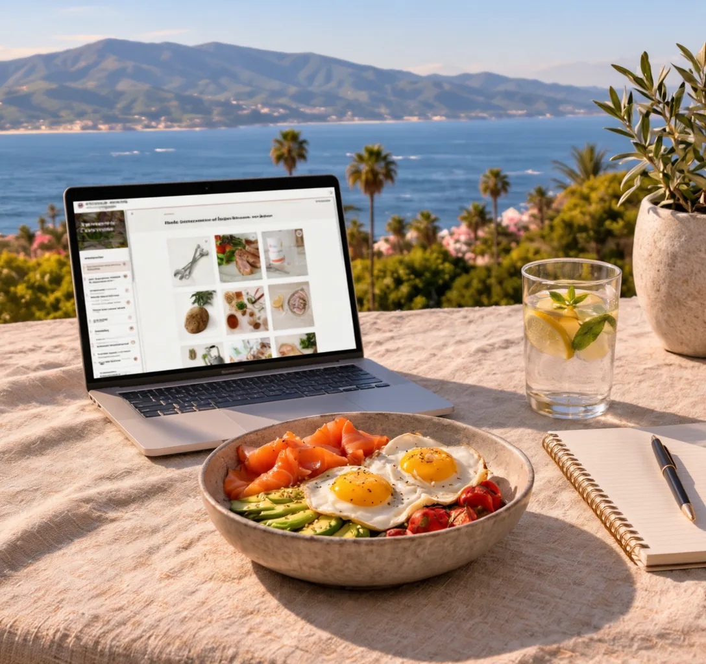
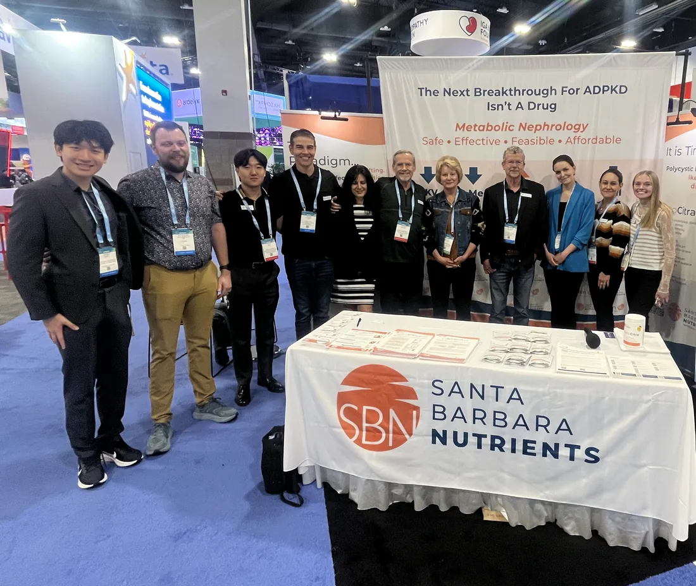

Das Fundament legen
Bereite dich vor, ermittle deine Ausgangswerte und lerne deine Ernährungsfachkraft kennen.
Ein wissenschaftlich fundiertes Ernährungs- und Lebensstil-Schulungsprogramm zur Unterstützung der Nierengesundheit, des Stoffwechsels und einer höheren Lebensqualität.

Ren-Nu verbindet Schulung, persönliche Beratung, Tracking-Tools und kontinuierliche Unterstützung, damit du nierenorientierte Ernährungs- und Lebensstiländerungen in die Praxis umsetzen kannst.
Setze Forschung zu Stoffwechsel und Nierengesundheit in praktische Alltagsentscheidungen um.
16 Wochen begleitete SchulungPasse das Programm an deine Nierenfunktion, deine Laborwerte, deine Vorlieben und deinen Alltag an.
3 Einzelsitzungen mit einer ErnährungsfachkraftVerfolge Ernährung, Ketonwerte, Laborwerte und Symptome und lerne, wie dein Körper reagiert.
Tracking-Tools inklusiveNimm an Live-Coaching-Calls teil und werde Teil einer Gemeinschaft von Menschen, die PKD verstehen.
Dauerhafter Zugang zu Live-CallsEin Lebensmittel für besondere medizinische Zwecke (Medical Food), entwickelt von PKD-Forschenden zur Unterstützung der ernährungsbedingten Ketose und des Diätmanagements bei polyzystischer Nierenerkrankung.
Ein strukturierter, persönlicher Weg, der dir hilft, dauerhafte Veränderungen aufzubauen.
Bereite dich vor, ermittle deine Ausgangswerte und lerne deine Ernährungsfachkraft kennen.
Starte sicher – mit Anleitung und Unterstützung in Echtzeit.
Lerne, wie dein Körper reagiert, und verfeinere deinen Ansatz.
Entwickle die Fähigkeiten und das Selbstvertrauen, langfristig weiterzumachen.
Die Anmeldung ist fortlaufend möglich – Teilnehmende können beginnen, sobald ihre Bewerbung geprüft und angenommen wurde.
In veröffentlichten Studien, klinischer Forschung und Daten aus dem Programmalltag sehen wir eine einheitliche Richtung der Veränderung bei Ergebnissen, die für Menschen mit PKD wichtig sind.
Hervorragende Therapietreue • Berichtete Verbesserungen der Lebensqualität
Beobachtet in unterschiedlichen Studiendesigns und Populationen; nicht jedes Ergebnis wurde in jeder Studie untersucht.
In den Videos berichten Teilnehmende von Verbesserungen ihrer Nierenfunktion, ihrer Stoffwechselgesundheit und ihrer täglichen Symptome, von mehr Sicherheit im Umgang mit PKD und von ihrem allgemeinen Wohlbefinden (Videos auf Englisch).
Erfahrungen sind individuell verschieden. Ren-Nu ist ein Schulungsprogramm, das fundierte Lebensstiländerungen unterstützen soll.

Ren-Nu vereint PKD-Forschende, Ärztinnen und Ärzte, Fachleute für Nierenernährung sowie Betroffene, die die Erkrankung aus eigener Erfahrung kennen. Das Ergebnis ist eine Begleitung, die auf Evidenz beruht—und für das echte Leben gemacht ist.
Forschende · Ärztinnen und Ärzte · Ernährungsfachleute · Betroffene
Hier findest du Antworten auf häufige Fragen zum Ren-Nu-Programm.
Nein. Ren-Nu ist ein strukturiertes Ernährungs- und Lebensstil-Schulungsprogramm. Es ersetzt keine medizinische Versorgung, und Teilnehmende sollten eng mit ihrem Behandlungsteam zusammenarbeiten.
Das Programm bietet eine strukturierte Anleitung, die speziell auf Menschen mit PKD zugeschnitten ist – einschließlich nierenschonender Nährstoffaspekte. Sprich vor der Umsetzung mit deiner Ärztin oder deinem Arzt.
Nein, Vorerfahrung ist nicht nötig. Das Programm beginnt mit grundlegendem Wissen und baut strukturiert und begleitet darauf auf.
Ren-Nu eignet sich am besten für Menschen mit PKD in den CKD-Stadien 1–3. Bewerbungen von Menschen in den Stadien 4–5 werden individuell geprüft, um festzustellen, ob das Programm für ihre Bedürfnisse geeignet ist.
Teilnehmende behalten lebenslangen Zugang zu den wöchentlichen Coaching- und Community-Calls sowie weiterhin Zugang zur HIPAA-konformen Datenplattform.
Ren-Nu richtet sich an Menschen mit PKD, die bereit sind, sich auf ein strukturiertes, forschungsbasiertes Ernährungsprogramm einzulassen. Wenn du dich auf Beständigkeit, Lernen und langfristige Nachhaltigkeit einlassen möchtest, laden wir dich ein, dich zu bewerben.